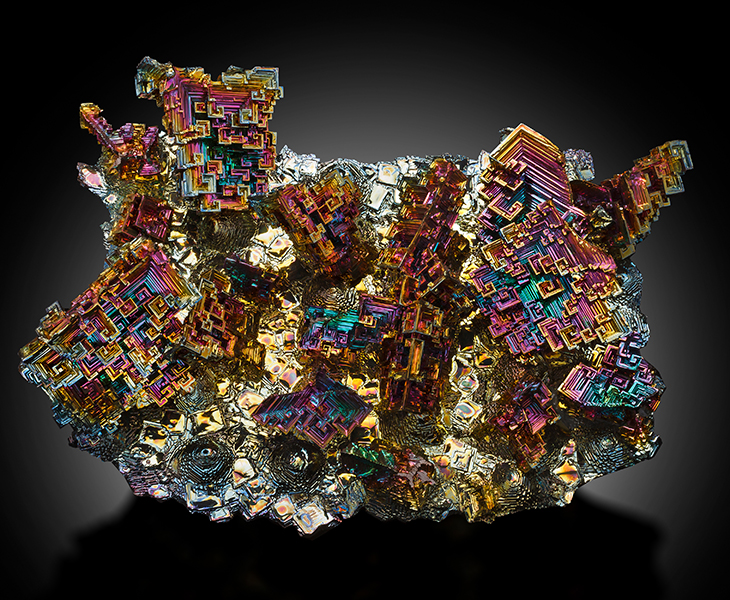

Le Bismuth
Le Bismuth est MULTICOLOR, ATTENTION de pas le DIGÉRÉ cela peut étre un grand danger.

FUN FACT: La forme du bismuth est NATUREL.
Il y a longtemps le bismuth été utilisé comme médicament pour l'estomac. Cela marcher mais une trop grosse dose peut étre fatal